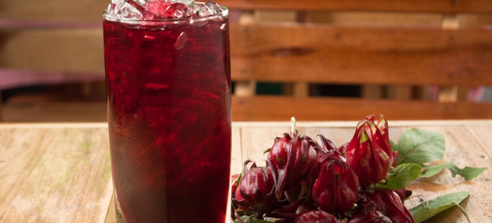

Agua de Jamaica
El agua de jamaica es una bebida natural con un característico sabor ácido y refrescante. Además de ser deliciosa, la flor de jamaica tiene propiedades antioxidantes y ayuda a la digestión.
Ingredientes
- 1 taza de flores secas de jamaica
- 2 litros de agua
- 1/2 taza de azúcar (al gusto)
- Hielos al gusto
Preparación
- Hierve 1 litro de agua con la jamaica durante 5 a 10 minutos.
- Cuela el concentrado y mézclalo con el litro de agua restante.
- Agrega azúcar al gusto y revuelve bien.
- Refrigera y sirve con hielo.